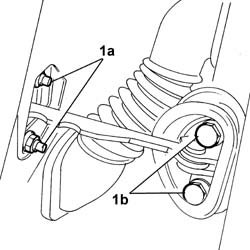
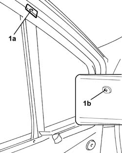
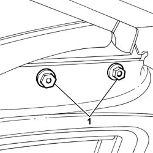
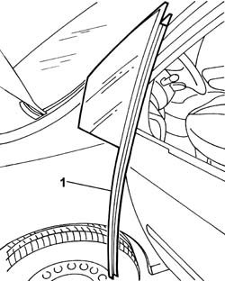
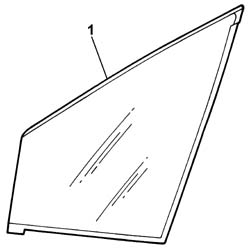

7005D08 SINGLE FIXED GLASS FOR FRONT SIDE DOOR. S-R
- Path
- Procedures > 70 FITTINGS > 7005 PASSENGER COMPARTMENT FRONT SIDE DOORS > 7005D FRONT SIDE DOOR WINDOW GLASSES > 7005D08 SINGLE FIXED GLASS FOR FRONT SIDE DOOR. S-R
- Kind
- repair procedure (removal / refitting; the operation number is the code)
- Applies to
- all engines; all production periods
- Interactive page
- https://sloeber94.github.io/elrnDB-fUlss/en/#/179007663
Applies to: all engines; all production periods
 Removing
Removing
 Refitting
RefittingSee in Op. 5530B56 BATTERY DRIP TRAY COVER
- Disconnect the negative battery terminal.
See in Op. 7005M14 ELECTRIC WINDOWS, REAR VIEW MIRRORS and CENTRAL LOCKING switch unit on driver's front door - R.R.
See in Op. 7040E24 LOWER COURTESY LIGHT in FRONT DOOR panel - R.R.
See in Op. 7005E10 Front side door INTERIOR PANEL - R.R.
- Detach the external rear view mirror.
See in Op. 7005D26 GLASS SCRAPER (external) (one) left or right for front side door DESCENDING WINDOW GLASS - R.R.
1. Loosen the bolts (1a) and (1b) to increase the opening.

Applies to: all engines; all production periods
1. Using a drill fitted with a suitable helical point, remove the top rivet (1a) and the bottom rivet securing the ascending window guide channel.

Applies to: all engines; all production periods
1. Undo the nuts fixing the window frame descending window guide channel.

Applies to: all engines; all production periods
1. Remove the front side door single fixed window complete with descending window channel.x

Applies to: all engines; all production periods
1. Remove the single fixed window from the descending window channel.

Applies to: all engines; all production periods
Refitting
Removing- Fit the single fixed window to the ascending window channel.
- Fit the single fixed window, complete with descending window channel, in the front door.
- Tighten the nuts fixing the window frame descending window guide channel to torque.
- Using a riveter and suitable size new rivets, fasten the ascending window guide channel to the door.
- Tighten the bolts for the bodyshell pillar.
See in Op. 7005D26 GLASS SCRAPER (external) (one) left or right for front side door DESCENDING WINDOW GLASS - R.R.
- Reattach the external rear view mirror.
See in Op. 7040E24 LOWER COURTESY LIGHT in FRONT DOOR panel - R.R.
- 7010M14
See in Op. 7005E10 Front side door INTERIOR PANEL - R.R.
See in Op. 5530B56 BATTERY DRIP TRAY COVER